Explore
Sister cars
The same car under several badges, or close relatives sharing much of their engineering: 211 families of generations from different brands, launched within a few years of each other and named as related on both sides.
Buick · Cadillac · Chevrolet · Holden · Isuzu · Oldsmobile · Pontiac · Vauxhall 1981–1983
 Buick Skyhawk · Second generation (1982–1989)
Buick Skyhawk · Second generation (1982–1989) Cadillac Cimarron
Cadillac Cimarron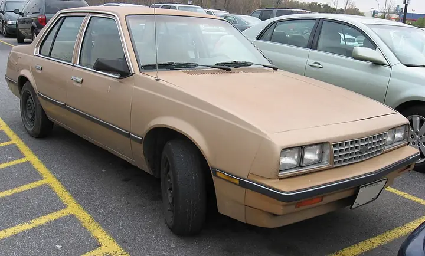
Chevrolet Cavalier · First generation (1982–1987)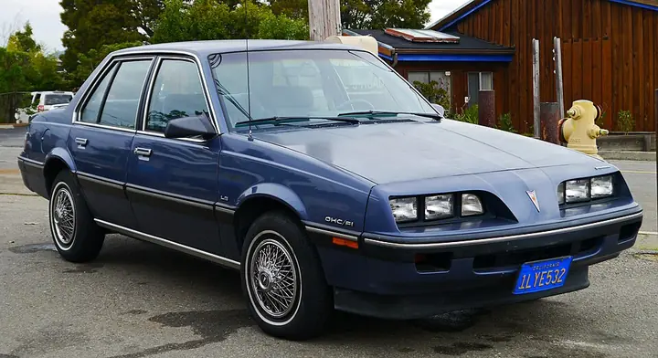
Pontiac Sunbird · Second generation (1982–1987)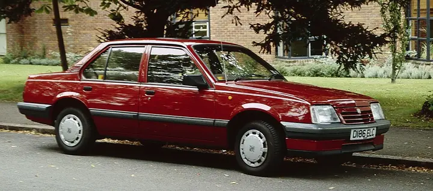
Vauxhall Cavalier · Mark II (1981–1988)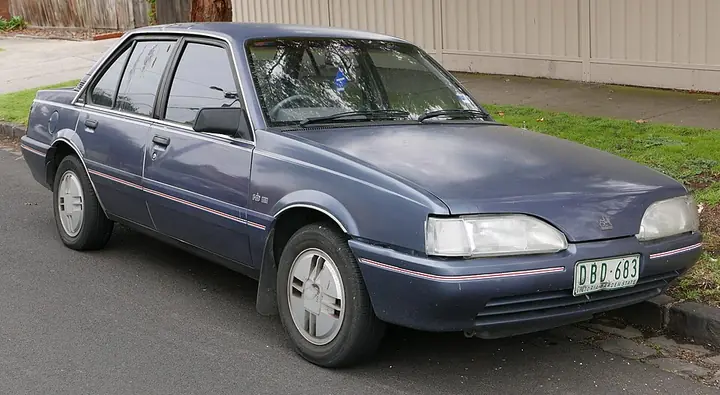
Holden Camira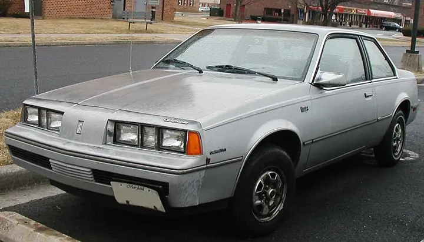
Oldsmobile Firenza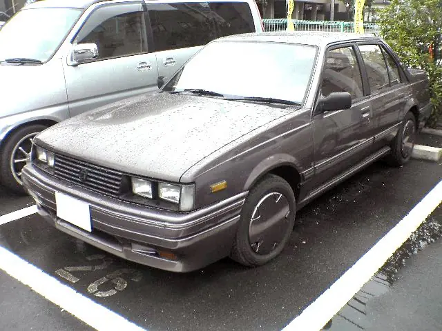
Isuzu Aska · First generation (1983–1989)
Buick · Chevrolet · Oldsmobile · Opel · Pontiac 1996–1999
Audi · Bentley · Lamborghini · Porsche · Volkswagen 2015–2018


Buick · Chevrolet · Oldsmobile · Pontiac 1970–1971
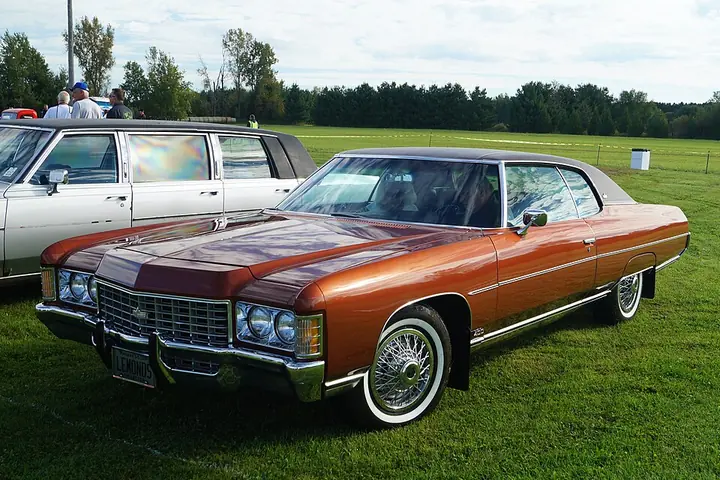
Chevrolet Caprice · Second generation (1971–1976) Buick LeSabre · Fourth generation (1971–1976)
Buick LeSabre · Fourth generation (1971–1976)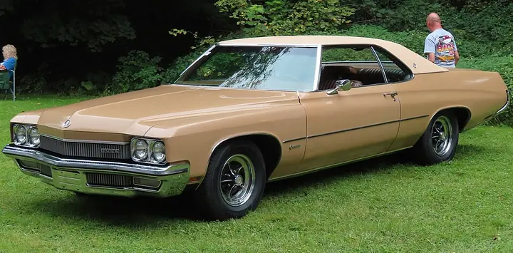
Buick Centurion- Oldsmobile 88 · Seventh generation (1971–1976)
 Pontiac Bonneville · Fifth generation (1971–1976)
Pontiac Bonneville · Fifth generation (1971–1976) Pontiac Parisienne · Fourth generation: 1971–1976
Pontiac Parisienne · Fourth generation: 1971–1976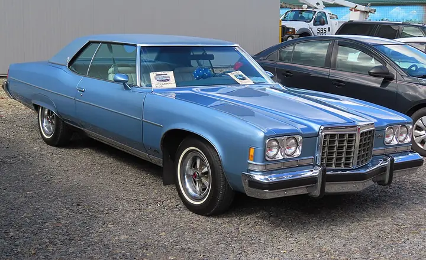
Pontiac Grand Ville
Buick · Chevrolet · Oldsmobile · Pontiac 1974–1975

Buick · Chevrolet · Oldsmobile · Pontiac 1976–1977
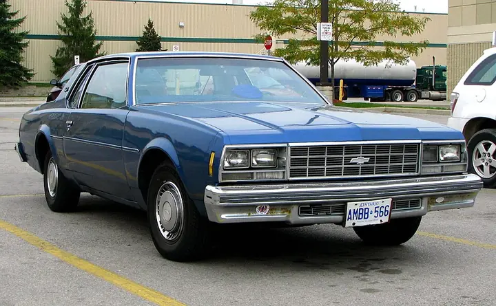
Chevrolet Impala · Sixth generation (1977–1985) Chevrolet Caprice · Third generation (1977–1990)
Chevrolet Caprice · Third generation (1977–1990) Buick LeSabre · Fifth generation (1977–1985)
Buick LeSabre · Fifth generation (1977–1985) Oldsmobile 88 · Eighth generation (1977–1985)
Oldsmobile 88 · Eighth generation (1977–1985)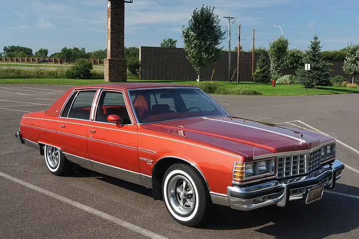
Pontiac Bonneville · Sixth generation (1977–1981)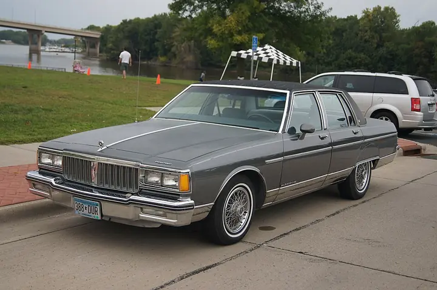
Pontiac Parisienne · Fifth generation: 1977–1986
Buick · Chevrolet · Oldsmobile · Pontiac 1977–1980
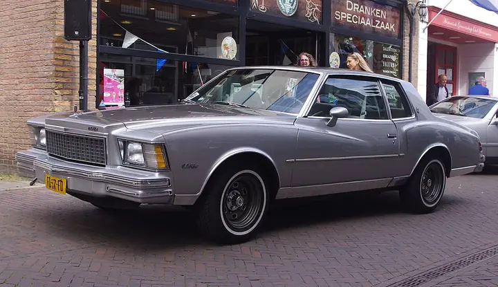
Chevrolet Monte Carlo · Third generation (1978–1980)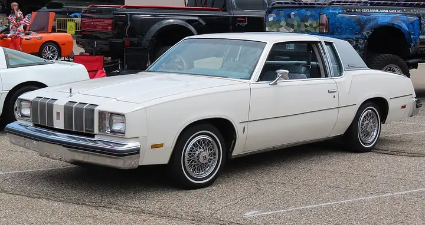
Oldsmobile Cutlass Supreme · Fourth generation (1978–1988)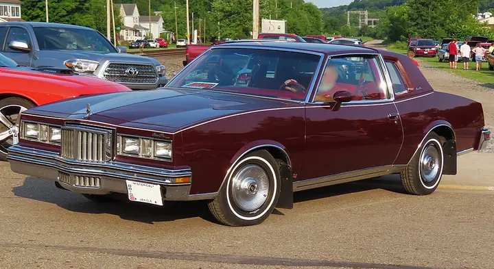
Pontiac Grand Prix · Fifth generation (1978–1987) Pontiac Grand Am · Second generation (1978–1980)
Pontiac Grand Am · Second generation (1978–1980)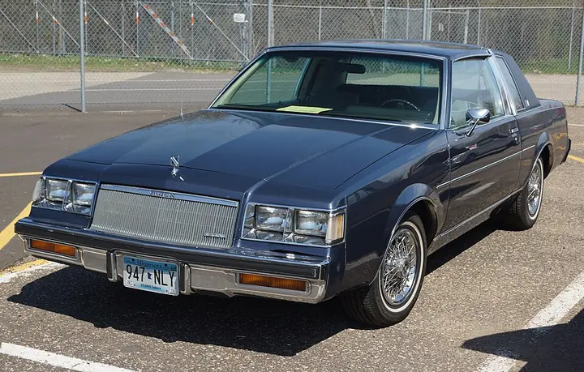
Buick Regal · Second generation (1978) Buick Century · Fourth generation (1978–1981)
Buick Century · Fourth generation (1978–1981) Chevrolet Malibu · Fourth generation (1978)
Chevrolet Malibu · Fourth generation (1978)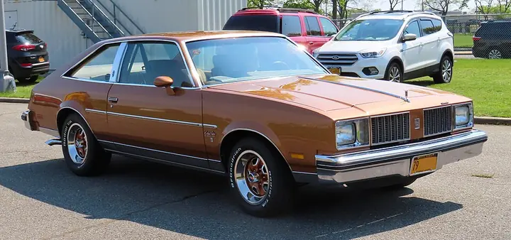
Oldsmobile Cutlass · Fifth generation (1978) Pontiac LeMans · Fifth generation (1978–1981)
Pontiac LeMans · Fifth generation (1978–1981)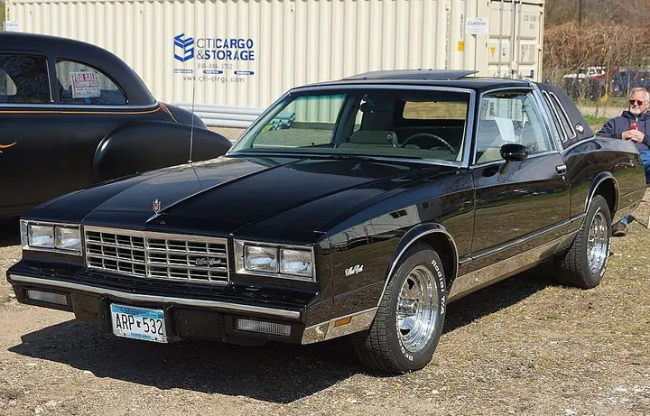
Chevrolet Monte Carlo · Fourth generation (1981–1988)